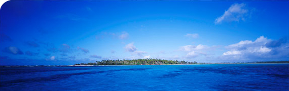

MAURI FROM KIRIBATI
Central Island is a place where found in the middle of Kiribati. I chose this place because it unique from other islands of Kiribati. This island is unique because it place in the middle of the 23 islands of Kiribati. Fishing in this area is easier and everyone on this island can't miss eating fish. The other thing that unique is a traditional cultures. All Kiribati cultures are maintained on this island and still practice.

Maneaba is a place for elders man in the village to meet and discuss things about the village. There are lots of activities that can happen in this building. All activities will be controlled under the elders leadership. No woman can talk inside the maneaba while the meeting is on. Te maneaba is one of the most important building besides the meeting house in Kiribati.